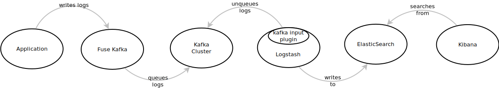

fuse_kafka is a project I’ve been working on for the past months.
Basically, it is a system that captures writes done to specific directories and sends those to apache kafka. It aims to facilitate heterongeneous log retrieval.
Once you get logs in kafka, you may want to be able to put them into a generic enough log centralization system.
That’s why I wrote a plugin for logstash which allows to read logstash events from kafka.

Sample architecture
Here is an example of fuse_kafka setup

- fuse_kafka is the log shipper: its role is to retrieve logs from machines and send it to kafka
- kafka acts as the logging event messaging queue it is compouned with:
- usually several kafka messaging broker machines
- usually several zookeeper machines
- logstash retrieves logs from kafka and writes them for example to an indexer like elasticsearch
- logs can then be queried via a UI (here kibana)
In this article, we’re going to do a fully local setup of this architecture.
Getting stuff
Let’s create a working directory
#!bash
$ mkdir /tmp/tutorial
$ cd /tmp/tutorial
Let’s download logstash:
#!bash
$ wget https://download.elasticsearch.org/logstash/logstash/logstash-1.4.2.tar.gz
$ tar xzf logstash-1.4.2.tar.gz
And fuse_kafka:
#!bash
$ git clone https://github.com/yazgoo/fuse_kafka.git
Starting fuse_kafka agent
Following fuse_kafka quickstart in README, we’ll first build fuse_kafka:
#!bash
$ ./fuse_kafka/build.py
Then, we’ll open one terminal and start zookeeper (this will also download kafka):
#!bash
$ ./fuse_kafka/build.py zookeeper_start
On another terminal, let’s start kafka:
#!bash
$ ./fuse_kafka/build.py kafka_start
Now, we’ll start fuse_kafka shipper:
#!bash
$ cd fuse_kafka
$ src/fuse_kafka.py start
Let’s check the shipper is running:
#!bash
$ src/fuse_kafka.py status
listening on /tmp/fuse-kafka-test
service is running
Starting logstash agent
Ok, so from a new terminal, in fuse_kafka directory, let’s launch logstash:
$ ../logstash-1.4.2/bin/logstash -p src/ -f conf/logstash.conf
Now, let’s try and write to the directory that fuse_kafka is watching:
$ echo "hello, world" > /tmp/fuse-kafka-test/first
On logstash terminal, you should get this output (see README for more information on each field):
#!ruby
{
"path" => "/tmp/fuse-kafka-test/first",
"pid" => 4682,
"uid" => 1000,
"gid" => 1000,
"@message" => "hello, world\n",
"@timestamp" => "2015-01-16T11:45:41.000+01:00",
"user" => "yazgoo",
"group" => "yazgoo",
"command" => "-bash ",
"@version" => "0.1.4",
"@fields" => {
"hostname" => "test"
},
"@tags" => [
[0] "test"
]
}
This shows that the whole thing worked as expected:
1. fuse_kafka captured the writing done with echo and sent it to kafka
1. logstash read it from kafka
Under the hood
logstash configuration
Let’s have a look at logstash configuration in conf/logstash.conf:
#!ruby
input
{
kafka
{
load => ["$PWD/kafka_2.8.0-0.8.1.1/libs/**/*.jar"]
zk_connect => "localhost"
group_id => "logstash"
topic => "logs"
num_threads => 4
}
}
output { stdout { codec => rubydebug } }
This is the most basic configuration (see documentation for more information on the syntax).
The output part is writing events to stdout.
In the input part,
we’re reading from a local kafka (zk_connect is zookeeper address),
loading jars from kafka directory, and reading logs topic.
kafka plugin
We use kafka input plugin,
which is available in src/logstash/inputs/kafka.rb
This plugin is based on kafka java consumer, hence the jars we load from
"$PWD/kafka_2.8.0-0.8.1.1/libs/**/*.jar"
Using elasticsearch and kibana
logstash being so easy to use, we can enable kibana and elastic search,
just by replacing the output line in conf/logstash.conf with:
#!ruby
output
{
elasticsearch
{
host => localhost
embedded => true
}
stdout { codec => rubydebug }
}
So now, let’s launch logstash with elasticsearch and kibana UI in embedded mode:
../logstash-1.4.2/bin/logstash -p src/ -f conf/logstash.conf web --port 1234
A default UI should be available at http://localhost:1234/index.html#/dashboard/file/guided.json
On the DOCUMENTS widget, lets select:
- @fields.hostname
- @timestamp
- path
- @message
- command
Here is what we get:

Conclusion
Logstash/ElasticSearch/Kibana are awesome, and fuse_kafka/kafka now can fit right with this power trio!